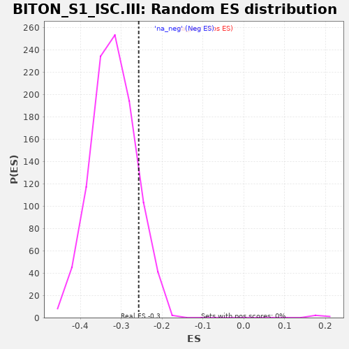

| | | Dataset | al5_v_al2 |
| Phenotype | NoPhenotypeAvailable |
| Upregulated in class | na_neg |
| GeneSet | BITON_S1_ISC.III |
| Enrichment Score (ES) | -0.2576482 |
| Normalized Enrichment Score (NES) | -0.8049936 |
| Nominal p-value | 0.8716149 |
| FDR q-value | 0.9845155 |
| FWER p-Value | 1.0 |
Table: GSEA Results Summary
 Fig 1: Enrichment plot: BITON_S1_ISC.III
Fig 1: Enrichment plot: BITON_S1_ISC.III
Profile of the Running ES Score & Positions of GeneSet Members on the Rank Ordered List
| PROBE | GENE SYMBOL | GENE_TITLE | RANK IN GENE LIST | RANK METRIC SCORE | RUNNING ES | CORE ENRICHMENT | | 1 | Brd8 | | | 39 | 0.220 | 0.0173 | No |
| 2 | Cenpf | | | 139 | 0.156 | 0.0155 | No |
| 3 | Ube2c | | | 166 | 0.147 | 0.0271 | No |
| 4 | Ubap2 | | | 367 | 0.098 | -0.0012 | No |
| 5 | Tex10 | | | 398 | 0.094 | 0.0035 | No |
| 6 | Cks2 | | | 454 | 0.086 | 0.0025 | No |
| 7 | Cenpc1 | | | 506 | 0.080 | 0.0015 | No |
| 8 | Lrrc45 | | | 580 | 0.071 | -0.0048 | No |
| 9 | Ino80e | | | 590 | 0.070 | 0.0015 | No |
| 10 | Cdk1 | | | 685 | 0.062 | -0.0100 | No |
| 11 | Nsmce4a | | | 700 | 0.060 | -0.0060 | No |
| 12 | Rpap1 | | | 789 | 0.053 | -0.0174 | No |
| 13 | Ncapd3 | | | 849 | 0.049 | -0.0235 | No |
| 14 | Stag1 | | | 910 | 0.044 | -0.0303 | No |
| 15 | Hnrnpul1 | | | 940 | 0.042 | -0.0313 | No |
| 16 | Pck2 | | | 950 | 0.041 | -0.0283 | No |
| 17 | Ezh2 | | | 983 | 0.039 | -0.0302 | No |
| 18 | Fbln1 | | | 1014 | 0.038 | -0.0318 | No |
| 19 | Rsrc1 | | | 1033 | 0.036 | -0.0313 | No |
| 20 | Slc9a8 | | | 1094 | 0.033 | -0.0394 | No |
| 21 | Lsm2 | | | 1104 | 0.032 | -0.0375 | No |
| 22 | Hmgb2 | | | 1175 | 0.028 | -0.0481 | No |
| 23 | Ilf3 | | | 1213 | 0.026 | -0.0525 | No |
| 24 | Parp2 | | | 1278 | 0.022 | -0.0626 | No |
| 25 | Nup214 | | | 1284 | 0.021 | -0.0612 | No |
| 26 | Srrt | | | 1325 | 0.019 | -0.0669 | No |
| 27 | Ahctf1 | | | 1391 | 0.016 | -0.0779 | No |
| 28 | Xrcc1 | | | 1406 | 0.016 | -0.0789 | No |
| 29 | Hist1h1e | | | 1434 | 0.014 | -0.0826 | No |
| 30 | Rangap1 | | | 1460 | 0.013 | -0.0861 | No |
| 31 | Suz12 | | | 1461 | 0.013 | -0.0847 | No |
| 32 | Ccdc77 | | | 1465 | 0.012 | -0.0838 | No |
| 33 | Tcof1 | | | 1468 | 0.012 | -0.0828 | No |
| 34 | Sae1 | | | 1480 | 0.012 | -0.0837 | No |
| 35 | Smc2 | | | 1488 | 0.011 | -0.0838 | No |
| 36 | Ccdc34 | | | 1498 | 0.011 | -0.0844 | No |
| 37 | Pms2 | | | 1562 | 0.008 | -0.0959 | No |
| 38 | Dnajc9 | | | 1570 | 0.008 | -0.0964 | No |
| 39 | Slc20a2 | | | 1592 | 0.006 | -0.0999 | No |
| 40 | Pold1 | | | 1602 | 0.006 | -0.1010 | No |
| 41 | Ssrp1 | | | 1630 | 0.004 | -0.1059 | No |
| 42 | Pmf1 | | | 1689 | 0.001 | -0.1172 | No |
| 43 | Rhno1 | | | 1691 | 0.001 | -0.1173 | No |
| 44 | Pds5b | | | 1698 | 0.001 | -0.1184 | No |
| 45 | Bckdk | | | 1715 | -0.000 | -0.1215 | No |
| 46 | Fgfr1op | | | 1751 | -0.002 | -0.1282 | No |
| 47 | Cmss1 | | | 1761 | -0.003 | -0.1296 | No |
| 48 | Cep192 | | | 1795 | -0.005 | -0.1356 | No |
| 49 | Rfc4 | | | 1816 | -0.006 | -0.1389 | No |
| 50 | U2af2 | | | 1854 | -0.008 | -0.1453 | No |
| 51 | Rfwd3 | | | 1906 | -0.010 | -0.1543 | No |
| 52 | Cep250 | | | 1970 | -0.012 | -0.1653 | No |
| 53 | Tyw1 | | | 2006 | -0.013 | -0.1707 | No |
| 54 | Itga1 | | | 2053 | -0.015 | -0.1780 | No |
| 55 | Nudt21 | | | 2071 | -0.016 | -0.1796 | No |
| 56 | Pold2 | | | 2072 | -0.016 | -0.1777 | No |
| 57 | Hjurp | | | 2077 | -0.016 | -0.1766 | No |
| 58 | Exosc8 | | | 2081 | -0.017 | -0.1753 | No |
| 59 | Tyms | | | 2097 | -0.017 | -0.1763 | No |
| 60 | Med4 | | | 2196 | -0.021 | -0.1933 | No |
| 61 | Nup205 | | | 2217 | -0.022 | -0.1947 | No |
| 62 | Eftud2 | | | 2279 | -0.025 | -0.2039 | No |
| 63 | Sp1 | | | 2296 | -0.026 | -0.2041 | No |
| 64 | Rbm15 | | | 2367 | -0.029 | -0.2147 | No |
| 65 | Tuba1b | | | 2493 | -0.034 | -0.2354 | No |
| 66 | Arhgap11a | | | 2522 | -0.036 | -0.2369 | No |
| 67 | Cdo1 | | | 2540 | -0.036 | -0.2361 | No |
| 68 | Nfix | | | 2542 | -0.036 | -0.2322 | No |
| 69 | Mum1 | | | 2547 | -0.037 | -0.2288 | No |
| 70 | Fam76b | | | 2550 | -0.037 | -0.2250 | No |
| 71 | Dbf4 | | | 2555 | -0.037 | -0.2215 | No |
| 72 | Ube2s | | | 2608 | -0.040 | -0.2273 | No |
| 73 | Pcnt | | | 2610 | -0.040 | -0.2230 | No |
| 74 | Cse1l | | | 2629 | -0.040 | -0.2219 | No |
| 75 | Spc24 | | | 2636 | -0.041 | -0.2185 | No |
| 76 | Pcbd2 | | | 2713 | -0.044 | -0.2284 | No |
| 77 | Anapc11 | | | 2862 | -0.051 | -0.2519 | Yes |
| 78 | Nelfe | | | 2870 | -0.051 | -0.2474 | Yes |
| 79 | Hirip3 | | | 2885 | -0.052 | -0.2442 | Yes |
| 80 | Pdik1l | | | 2907 | -0.053 | -0.2423 | Yes |
| 81 | Fen1 | | | 2945 | -0.055 | -0.2433 | Yes |
| 82 | Topbp1 | | | 2968 | -0.056 | -0.2413 | Yes |
| 83 | Smc4 | | | 3007 | -0.058 | -0.2421 | Yes |
| 84 | Sin3a | | | 3017 | -0.058 | -0.2373 | Yes |
| 85 | Gins4 | | | 3024 | -0.059 | -0.2318 | Yes |
| 86 | Rcc2 | | | 3109 | -0.063 | -0.2412 | Yes |
| 87 | Topors | | | 3139 | -0.064 | -0.2396 | Yes |
| 88 | Gmcl1 | | | 3159 | -0.065 | -0.2359 | Yes |
| 89 | Cdca8 | | | 3218 | -0.067 | -0.2397 | Yes |
| 90 | Dnmt1 | | | 3242 | -0.069 | -0.2364 | Yes |
| 91 | Rbl1 | | | 3255 | -0.069 | -0.2309 | Yes |
| 92 | Dgcr8 | | | 3259 | -0.069 | -0.2236 | Yes |
| 93 | Haus4 | | | 3266 | -0.070 | -0.2169 | Yes |
| 94 | Anapc15 | | | 3273 | -0.070 | -0.2101 | Yes |
| 95 | Tmpo | | | 3283 | -0.070 | -0.2039 | Yes |
| 96 | Chek2 | | | 3298 | -0.071 | -0.1985 | Yes |
| 97 | H2afx | | | 3324 | -0.073 | -0.1952 | Yes |
| 98 | Top2a | | | 3329 | -0.073 | -0.1876 | Yes |
| 99 | Rfc3 | | | 3388 | -0.077 | -0.1903 | Yes |
| 100 | Snrpd1 | | | 3435 | -0.079 | -0.1904 | Yes |
| 101 | Ppie | | | 3512 | -0.082 | -0.1960 | Yes |
| 102 | Cenpw | | | 3517 | -0.082 | -0.1874 | Yes |
| 103 | Hist1h1b | | | 3540 | -0.084 | -0.1822 | Yes |
| 104 | Sclt1 | | | 3547 | -0.085 | -0.1737 | Yes |
| 105 | Nucks1 | | | 3558 | -0.085 | -0.1660 | Yes |
| 106 | Magoh | | | 3566 | -0.085 | -0.1576 | Yes |
| 107 | Cep57 | | | 3570 | -0.086 | -0.1485 | Yes |
| 108 | Nudt1 | | | 3577 | -0.086 | -0.1398 | Yes |
| 109 | Tk1 | | | 3581 | -0.086 | -0.1306 | Yes |
| 110 | Prim1 | | | 3594 | -0.087 | -0.1230 | Yes |
| 111 | Gmnn | | | 3623 | -0.089 | -0.1184 | Yes |
| 112 | Fxn | | | 3636 | -0.090 | -0.1106 | Yes |
| 113 | Rnaseh2b | | | 3656 | -0.091 | -0.1040 | Yes |
| 114 | Cbx5 | | | 3657 | -0.091 | -0.0937 | Yes |
| 115 | Hspa14 | | | 3699 | -0.093 | -0.0912 | Yes |
| 116 | Ncapg2 | | | 3808 | -0.100 | -0.1011 | Yes |
| 117 | Smc1a | | | 3866 | -0.104 | -0.1005 | Yes |
| 118 | Rrm1 | | | 3940 | -0.109 | -0.1025 | Yes |
| 119 | Vars | | | 3948 | -0.110 | -0.0913 | Yes |
| 120 | Tubb5 | | | 3977 | -0.113 | -0.0840 | Yes |
| 121 | Smarca5 | | | 4059 | -0.120 | -0.0864 | Yes |
| 122 | Elof1 | | | 4064 | -0.120 | -0.0735 | Yes |
| 123 | Lonp1 | | | 4139 | -0.126 | -0.0738 | Yes |
| 124 | Lmnb1 | | | 4197 | -0.130 | -0.0703 | Yes |
| 125 | Mki67 | | | 4202 | -0.131 | -0.0562 | Yes |
| 126 | Lage3 | | | 4298 | -0.140 | -0.0589 | Yes |
| 127 | Nudc | | | 4316 | -0.143 | -0.0460 | Yes |
| 128 | Dtymk | | | 4420 | -0.156 | -0.0485 | Yes |
| 129 | Prdx4 | | | 4527 | -0.170 | -0.0501 | Yes |
| 130 | Pom121 | | | 4564 | -0.177 | -0.0370 | Yes |
| 131 | Atad2 | | | 4632 | -0.190 | -0.0286 | Yes |
| 132 | Stmn1 | | | 4658 | -0.194 | -0.0115 | Yes |
| 133 | Polr2f | | | 4828 | -0.234 | -0.0182 | Yes |
| 134 | Naa38 | | | 4849 | -0.239 | 0.0051 | Yes |
| 135 | Dek | | | 4977 | -0.278 | 0.0117 | Yes |
| 136 | H2afv | | | 4984 | -0.280 | 0.0425 | Yes |
Table: GSEA details [plain text format]

Fig 2: BITON_S1_ISC.III: Random ES distribution
Gene set null distribution of ES for BITON_S1_ISC.III